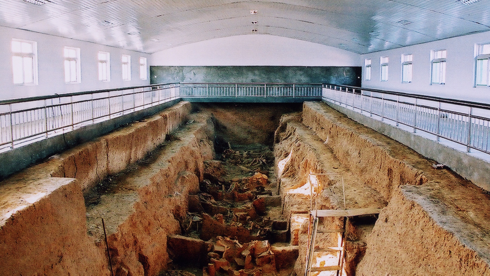

Rich History & Culture
Handan, with a history of over 3,000 years, is one of the ancient capitals of China. It was the capital of the Zhao State during the Warring States Period and has been an important cultural and economic center throughout history.
The city is famous for its historical sites, including the Zhao Mausoleum, Congtai Park, and the ancient city ruins. It's also known as the birthplace of many famous historical figures and cultural traditions.
Learn More